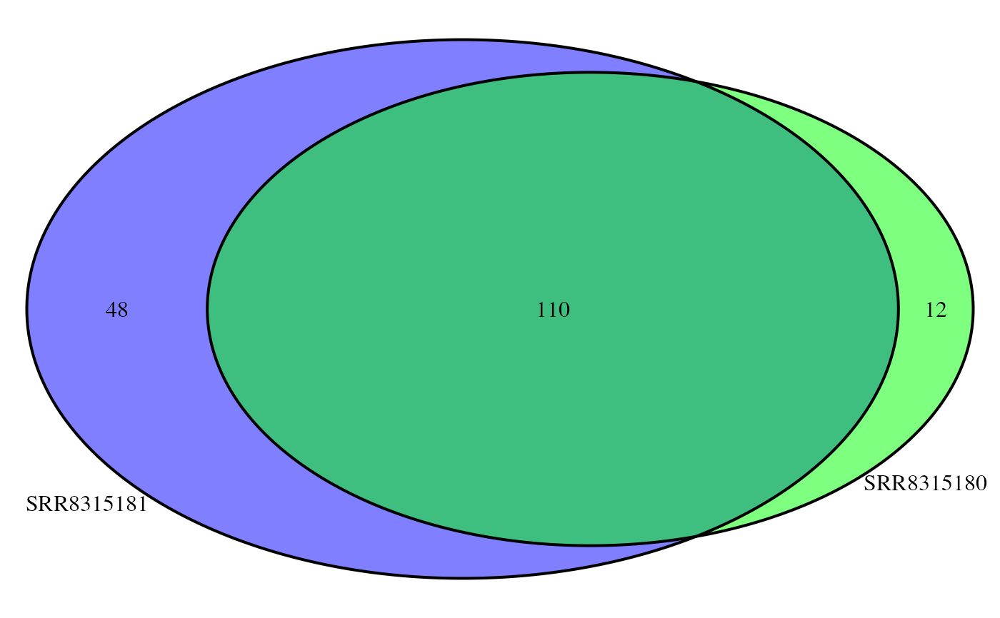

R/AllGenerics.R, R/plotOverlaps.R
plotOverlaps-methods.RdPlot Overlaps between list elements as an upset or Venn diagram
plotOverlaps(x, ...)
# S4 method for GRangesList
plotOverlaps(
x,
type = c("auto", "venn", "upset"),
var = NULL,
f = c("mean", "median", "max", "min", "sd"),
set_col = NULL,
...,
.sort_sets = "ascending",
min.gapwidth = 1L,
ignore.strand = TRUE
)
# S4 method for list
plotOverlaps(
x,
type = c("auto", "venn", "upset"),
set_col = NULL,
...,
.sort_sets = "ascending"
)GRangesList of S3 list able to be coerced to character vectors
Passed to draw.pairwise.venn (or
draw.single/triple.venn) for Venn Diagrams, and to
upset for UpSet plots
The type of plot to be produced
Column to summarised as a boxplot in an upper panel (UpSet plot only)
Summarisation function. Must return a single value from any numeric vector
Colours to be assigned to each set
passed to sort_sets in upset
Passed to reduce
Either a VennDiagram (i.e. grid) object, or a ComplexUpset plot
This function should give the capability to show overlaps for any number of replicates or groups, or a list of items such as gene names. For n = 2, a scaled Venn Diagram will be produced, however no scaling is implemented for n = 3
UpSet plots are possible for any lists with length > 1, and are the only implemented possibility for lists > 3.
If the input is a GRangesList an additional boxplot can be requested
using any numeric column within the existing mcols() element.
Values will be summarised across all elements using the requested function
and the boxplot will be included as an upper panel above the intersections
## Examples using a list of character vectors
ex <- list(
x = letters[1:5], y = letters[c(6:15, 26)], z = letters[c(2, 10:25)]
)
plotOverlaps(ex, type = "upset")
plotOverlaps(ex, type = "venn", set_col = 1:3, alpha = 0.3)
plotOverlaps(ex, type = "upset", set_col = 1:3, labeller = stringr::str_to_title)
plotOverlaps(ex[1:2])
## GRangesList object will produce a boxplot of summarised values in the
## upper panel
data("peaks")
grl <- peaks[1:3]
names(grl) <- gsub("_peaks.+", "", names(grl))
plotOverlaps(grl, type = 'upset', var = 'score', f = 'max')
## If only two samples are present, a VennDiagram will be produced
plotOverlaps(grl[1:2], set_col = c("green", "blue"))
